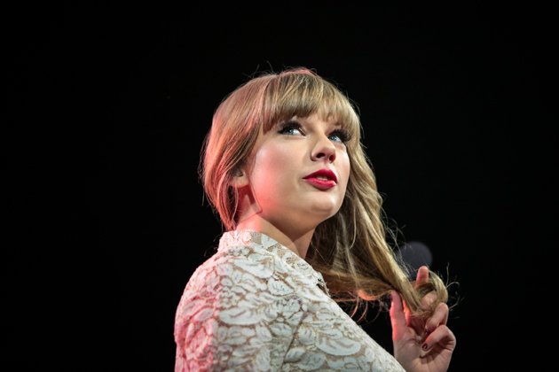
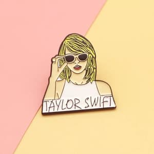
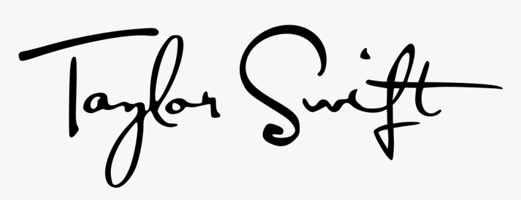

INI ADALAH BIODATA TAYLOR SWIFT

Taylor Alison Swift (lahir 13 Desember 1989) adalah seorang penyanyi dan penulis lagu berkebangsaan Amerika Serikat. Dibesarkan di Pennsylvania, dia pindah ke Nashville, Tennessee pada usia 14 tahun untuk mengejar karier di musik country. Dia menandatangani kontrak dengan label independen Big Machine Records. Pada tahun 2018 setelah kontraknya dengan Big Machine Records selesai, dia memutuskan untuk bergabung dengan Universal Music Group dan menjadi penulis lagu termuda yang pernah dipekerjakan oleh Sony/ATV Music publishing house. Album debut yang berjudul sama seperti namanya pada tahun 2006 bercokol di nomor lima di Billboard 200. Single ketiga album, "Our Song", menjadikannya sebagai orang termuda yang sendirian menulis dan membawakan sebuah lagu nomor satu di tangga lagu Hot Country Songs. Album kedua Swift, Fearless, dirilis pada tahun 2008. Didukung oleh keberhasilan single "Love Story" dan "You Belong with Me", Fearless menjadi album terlaris tahun 2009 di Amerika Serikat. Album ini memenangkan empat Grammy Awards, menjadikan Swift sebagai pemenang termuda Album of the Year.
